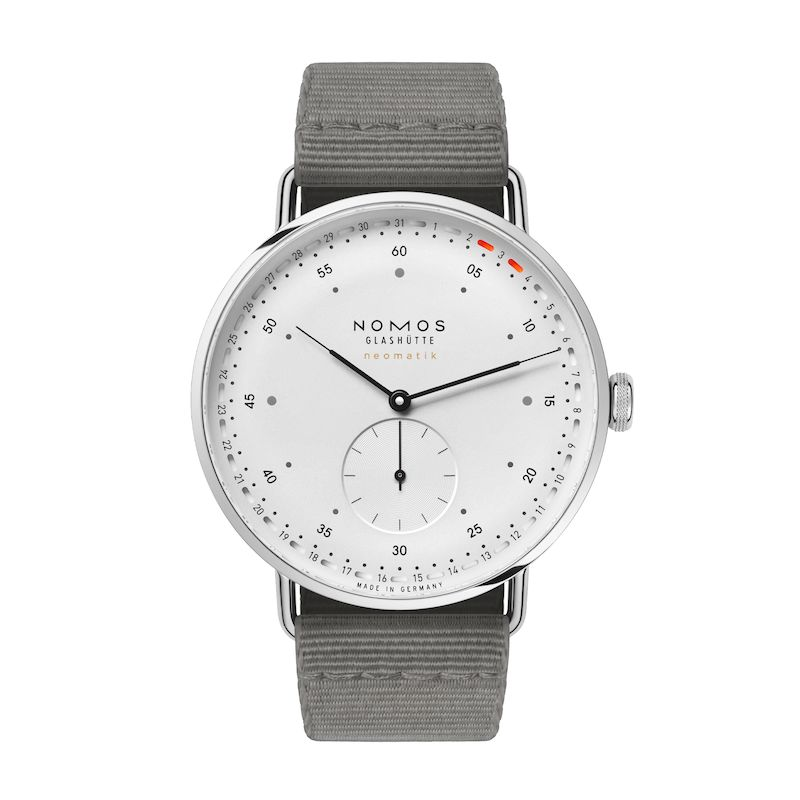

Marque: Nomos
Modele: Metro 41 Update
Description: Résolument urbaine, cosmopolite et smart : la montre Metro. Nommée Metro neomatik 41 Update, sa nouvelle version confirme son goût pour les formes claires. Unique et brevetée, la date circulaire NOMOS en orange fluo annonce des temps nouveaux – mais le design iconique de la Metro reste indubitablement Metro.
Lien fabricant: nomos-glashuette
Complication: Quantième
Prix: 3700€